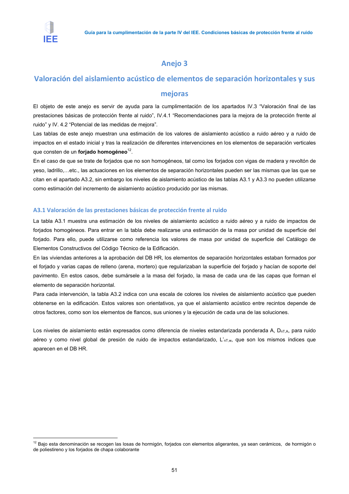

GUIA · Página 61 · versión 2016-11-01
SHA256: 813669d3066c0ff79457d57b80b0512a4fbb248bc5db1f7baf473c369a064738 · página física 61 de 65 · métodos de encabezado
solo si están cotejados.
Formatos: Markdown · JSON de bloques · PDF p. 61 · imagen PNG
Guía para la cumplimentación de la parte IV del IEE. Condiciones básicas de protección frente al ruido
51
Anejo 3
Valoración del aislamiento acústico de elementos de separación horizontales y sus
mejoras
El objeto de este anejo es servir de ayuda para la cumplimentación de los apartados IV.3 “Valoración final de las
prestaciones básicas de protección frente al ruido”, IV.4.1 “Recomendaciones para la mejora de la protección frente al
ruido” y IV. 4.2 “Potencial de las medidas de mejora”.
Las tablas de este anejo muestran una estimación de los valores de aislamiento acústico a ruido aéreo y a ruido de
impactos en el estado inicial y tras la realización de diferentes intervenciones en los elementos de separación verticales
que consten de un forjado homogéneo12.
En el caso de que se trate de forjados que no son homogéneos, tal como los forjados con vigas de madera y revoltón de
yeso, ladrillo,=etc., las actuaciones en los elementos de separación horizontales pueden ser las mismas que las que se
citan en el apartado A3.2, sin embargo los niveles de aislamiento acústico de las tablas A3.1 y A3.3 no pueden utilizarse
como estimación del incremento de aislamiento acústico producido por las mismas.
A3.1 Valoración de las prestaciones básicas de protección frente al ruido
La tabla A3.1 muestra una estimación de los niveles de aislamiento acústico a ruido aéreo y a ruido de impactos de
forjados homogéneos. Para entrar en la tabla debe realizarse una estimación de la masa por unidad de superficie del
forjado. Para ello, puede utilizarse como referencia los valores de masa por unidad de superficie del Catálogo de
Elementos Constructivos del Código Técnico de la Edificación.
En las viviendas anteriores a la aprobación del DB HR, los elementos de separación horizontales estaban formados por
el forjado y varias capas de relleno (arena, mortero) que regularizaban la superficie del forjado y hacían de soporte del
pavimento. En estos casos, debe sumársele a la masa del forjado, la masa de cada una de las capas que forman el
elemento de separación horizontal.
Para cada intervención, la tabla A3.2 indica con una escala de colores los niveles de aislamiento acústico que pueden
obtenerse en la edificación. Estos valores son orientativos, ya que el aislamiento acústico entre recintos depende de
otros factores, como son los elementos de flancos, sus uniones y la ejecución de cada una de las soluciones.
Los niveles de aislamiento están expresados como diferencia de niveles estandarizada ponderada A, DnT,A, para ruido
aéreo y como nivel global de presión de ruido de impactos estandarizado, L’nT,w, que son los mismos índices que
aparecen en el DB HR.
12 Bajo esta denominación se recogen las losas de hormigón, forjados con elementos aligerantes, ya sean cerámicos, de hormigón o
de poliestireno y los forjados de chapa colaborante
